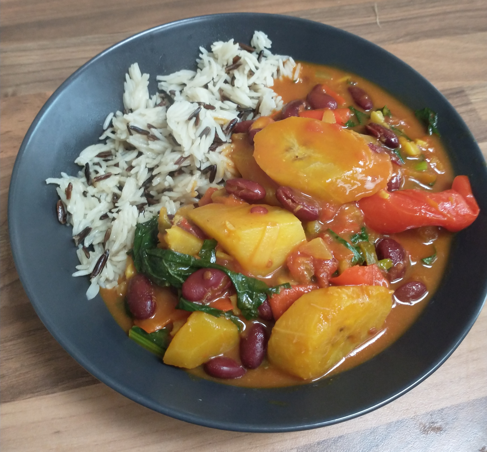

Vegan Caribbean Plantain Curry

Prep: 10 mins
// Cooking time: 25 minutes
Heart-warming vegan plantain curry inspired by Caribbean cuisine. Easy
to prepare and full of flavour! Serves 4 portions. Goes well with your
favourite rice.
Ingredients list:
2 ripe (not overripe) plantains, sliced. If you are using overripe
(black) plantain, add it to the pot later in the cooking process so it
doesn't turn to mush.
1 medium-sized sweet potato, chopped into <1 inch chunks
2 handfuls (a good bunch) of fresh spinach, washed and coarsely chopped
(Kale is another option, if you prefer)
1 medium brown onion, chopped
1 large shallot/2 medium shallots, chopped
1 pointed sweet pepper, chopped
1 can of coconut milk
1 tin of chopped tomatoes
1 tin of kidney beans (in water or chilli sauce, which you shouldn't
drain)
1 heaped table spoon of Mild Caribbean Curry Powder (I recommend Dunns
River, or anything mostly mustard, coriander and tumeric)
4 crushed garlic cloves
250ml water (or less, depending on how 'thick and hearty' you want this
to be)
optional: Scotch bonnet or similar chilli pepper to add heat.
2 tbsp your favourite cooking oil (vegetable, sunflower or coconut oil
all work well)
Fresh thyme or parsley
Pinch of salt (for spinach/kale)
Cooking instructions
1. Heat oil in large non-stick Dutch/enamelled Iron pot (Orange colour
not essential) and melt the coconut oil on low-medium heat. br>
2. Saute the shallots, onion and garlic until soft and
translucent.br>
3. Once the onions and so fourth are sauteed, add the bell peppers and
cook for roughly 5 minutes until the peppers have become soft.
4. Add thyme, chopped tomatoes, curry powder
5. Stir all of the spices into the vegetables for about 2 minutes until
they become fragrant.
6. Add the kidney beans, sweet potato and plantain (only add the
plantain now if it is firm, not over ripe) along with the scotch bonnet
(or other hot chilli), coconut milk and water.
7. Bring the pot to a rolling boil, cover with a lid, reduce the heat
to medium/low and simmer for about 25 minutes.
8. Carefully fold in the spinach 5 minutes before the given cooking
time and sprinkle some salt
9. Serve :)